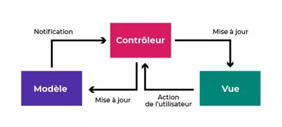

1) C'est quoi Symfony?
Symfony est un framework « full-stack » (front-end et back-end) open-source pour le développement web des
applications en PHP (Hypertext Preprocessor). Sa version acutelle est 7.1.2, sorti le 28 Juin 2024.
2) Comment marche Symfony ?
Symfony peut se servir dans un modèle appelé « Model View Controller » (« Modèle Vue Contrôleur » en français).
Ce modèle sert à faire des liens entre les bases de données avec les interfaces d’une application web.

Il sert aussi à automatiser les tâches communes pour que le développeur puisse
concentrer entièrement dans les spécifiques d’une application web.
La bonne chose de ce framework, c’est qu’il y a une bonne
documentation bien rédigé et simple à comprendre. Malheureusement, c'est en anglais, donc si vous n'avez pas appris correctement
l'anglais, les seules choses que vous pouvez compter sont les extraits de codes.